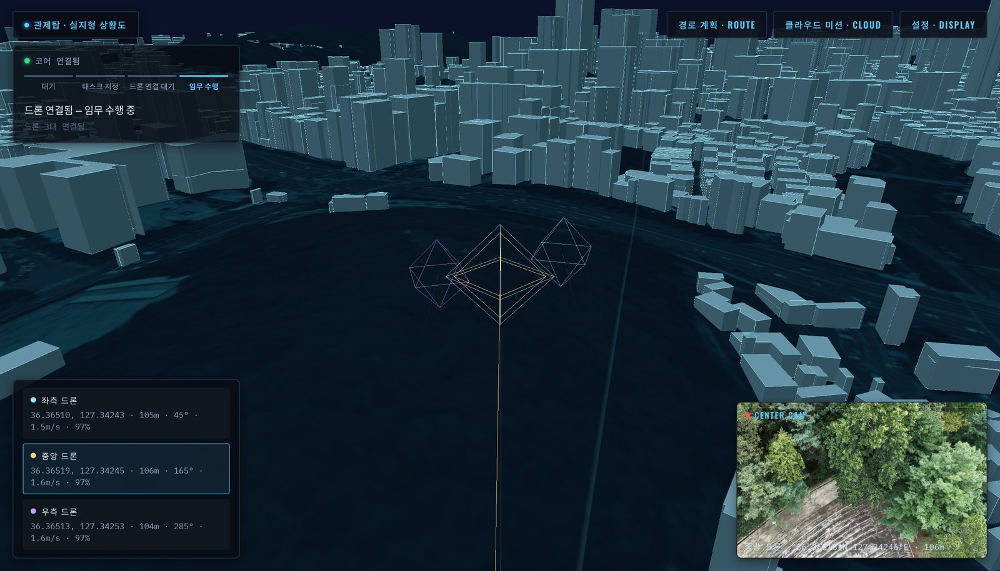
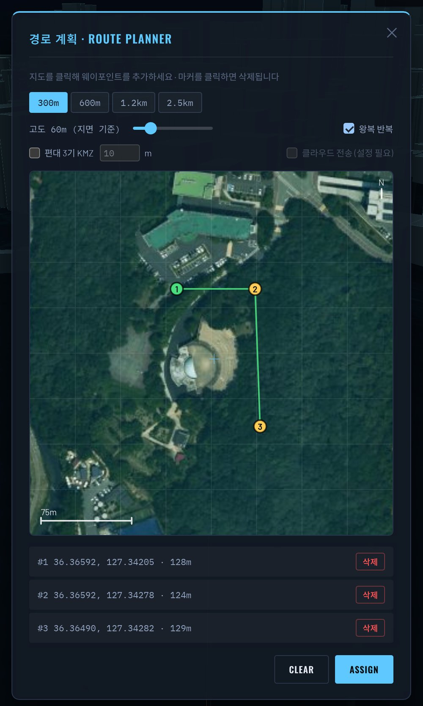
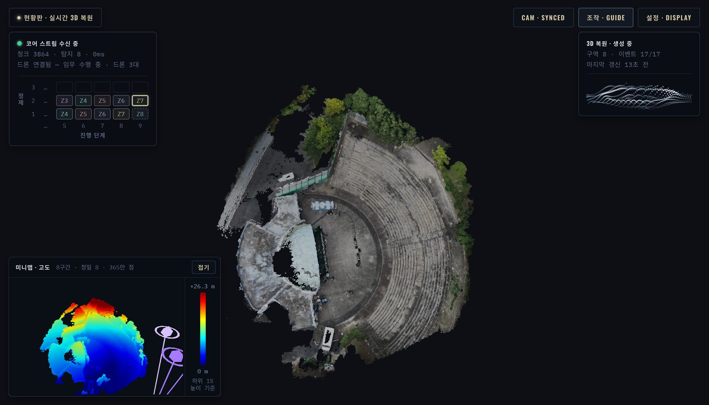
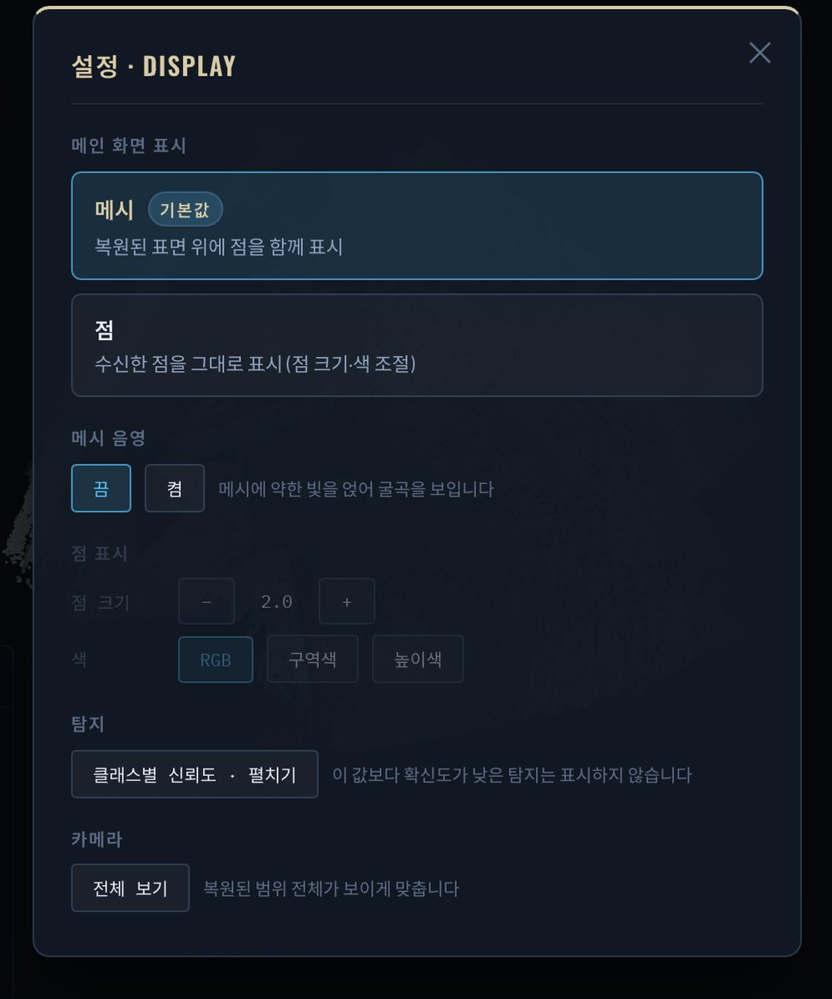
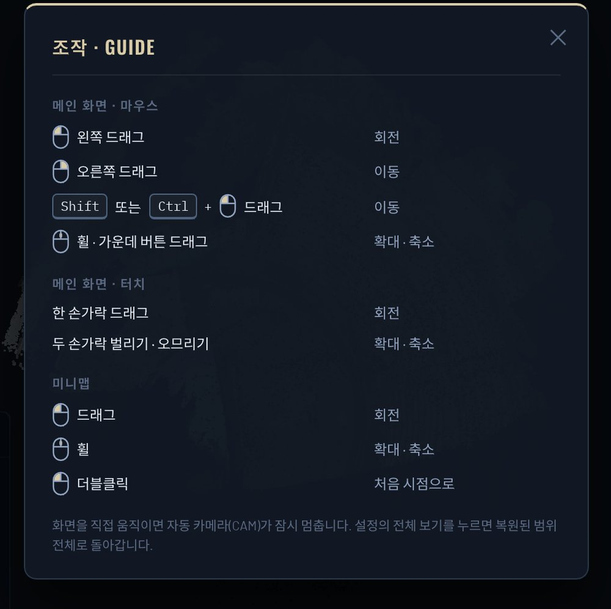

화면 둘러보기
사람이 보는 화면은 둘이에요. 관제탑은 드론을 어디로 보낼지 정하는 화면이고, 현황판은 복원된 현장을 3D로 보는 화면이에요. 역할이 다르니까 보이는 것도 달라요.
두 화면은 같은 코드로 웹 브라우저에서도, Windows · macOS · Linux 데스크톱 앱으로도 돌아가요. 현황판은 Android 앱도 있어요.
관제탑 · CONTROL
관제탑: 어디로 보낼지 정하는 화면
오퍼레이터가 드론의 경로를 GPS 좌표로 지정하는 화면이에요. 실제 지형 위에 드론의 현재 위치가 그려지고, 고른 드론이 보내는 카메라 영상이 우측 아래 패널에 떠요. 왼쪽 위에는 미션이 어디까지 왔는지(대기 · 태스크 지정 · 드론 연결 대기 · 임무 수행)가, 왼쪽 아래에는 드론마다 위치 · 고도 · 방위 · 속도 · 배터리가 보여요.

지형은 실제 데이터예요
배경으로 깔리는 지형과 건물은 그린 그림이 아니라 공개 데이터예요. 고도는 AWS Terrain Tiles DEM(한국 약 30m급), 위성 영상과 건물 폴리곤은 VWorld에서 받아 와요. 건물은 지붕 높이까지 입체로 세워요.
기준 씬은 대전(충남대~카이스트 일대)이에요. 반경 약 3km, 건물 약 6,191동이 올라가요. 드론 주변부터 가까운 순서로 실시간으로 불러오고, 씬 바깥쪽에는 3배 넓은 저해상 지형 링을 둘러서 끝이 잘려 보이지 않게 해요.
| 표시 옵션 | 이럴 때 좋아요 |
|---|---|
| 점 | 건물을 포인트로만 찍어요. 가장 가볍고, 드론 위치가 잘 보여요 |
| 검정 텍스처 (기본값) | 건물 덩어리가 또렷해요. 경로를 잡을 때 지형지물 판단이 쉬워요 |
| 실사 항공뷰 | 위성·항공 영상을 그대로 입혀요. 실제 현장과 대조할 때 좋아요 |
경로는 클릭으로 찍어요
툴바의 경로 계획 · ROUTE를 누르면 지도가 떠요. 가고 싶은 지점을 찍으면
GPS 웨이포인트가 쌓이고, 마커를 다시 누르면 지워져요. 지도 범위(300m · 1.2km ·
2.5km), 비행 고도, 왕복 여부를 고른 뒤 Assign을 누르면 리더 드론이 그
경로를 따라 비행해요. 나머지 드론은 리더와 일정한 간격을 유지하며 따라가요.
경로를 배정하는 순간이 새 미션의 시작이에요. 지난 미션의 점 · 메시 ·
탐지는 지우고 처음부터 다시 쌓아요. 클라우드 미션 · CLOUD에서는 DJI Fly
계정 클라우드에 올라간 웨이포인트 미션을 확인할 수 있어요.

| 키 | 동작 |
|---|---|
↑ ↓ ← → |
수동 조향. 전진·후진과 좌우 회전이에요 |
Q · E |
고도를 올리고 내려요 |
1 2 3 · Tab |
조종할 드론을 바꿔요 |
Esc |
설정 창을 닫아요 |
현황판 · STATUS
현황판: 도착한 것만 보이는 화면
지휘관이 보는 3D 상황판이에요. 서버가 복원을 마친 구역을 보내오면 그 구역이 화면에 나타나요. 드론이 지나갔다고 보이는 게 아니라 복원돼서 도착해야 보여요. 비행을 따라 지도가 자라나요.
AI가 찾은 사람과 위험구역은 3D 위에 마커로 얹혀요. 새 탐지가 오면 카메라가 그
지점으로 다가가고, 확인을 누르면 다가가기 전에 보던 곳으로 돌아와요.

| 자리 | 보여 주는 것 |
|---|---|
| 왼쪽 위 · 서버 패널 | 코어와 연결됐는지, 받은 청크와 탐지 수, 드론이 몇 대 붙었는지, 그리고 진행 단계(딜레이 패턴) |
| 오른쪽 위 · 3D 복원 | 지금 생성 중인지, 구역과 이벤트 수, 마지막 갱신이 얼마 전인지 |
| 왼쪽 아래 · 미니맵 | 위에서 본 현장을 높이 색으로 칠하고 드론 위치를 그려요. 접을 수 있어요 |
| 오른쪽 아래 · 탐지 카드 | 새 탐지의 종류와 확신도. 확인을 누르면 원래 시점으로 돌아가요 |
| 오른쪽 위 · 버튼 | CAM은 카메라 상태(따라가는 중 · 탐지로 다가가는 중 · 고정 · 돌아가는 중), 조작은 조작 안내, 설정은 표시 설정 |
보는 방식은 설정에서 바꿔요
메시로 보면 점들 위에 0.1m 면이 덮여 바닥과 벽이 이어져 보이고, 점으로 보면 복원된 점을 그대로 봐요. 점 크기와 색(실제 색 · 구역 색 · 높이 색)을 고를 수 있고, 메시에는 굴곡을 보이게 하는 음영을 켤 수 있어요(기본은 꺼짐).
탐지는 클래스마다 확신도 기준을 넘어야 화면에 올라와요. 기본값은 사람 80% · 화재 60% · 붕괴 60% · 도로 차단 70%이고, 설정에서 50~90% 사이로 바꿀 수 있어요.


| 조작 | 동작 |
|---|---|
| 왼쪽 드래그 · 한 손가락 드래그 | 회전 |
오른쪽 드래그 · Shift나 Ctrl + 왼쪽 드래그 | 이동 |
| 휠 · 가운데 버튼 드래그 · 두 손가락 | 확대 · 축소 |
| 미니맵 더블클릭 | 미니맵을 처음 시점으로 |
비어 있으면 비워 둬요
파이프라인이 끊겨 있으면 화면은 그 자리를 비워 두고 끊겼다고 표시해요. 그럴듯한 가짜 장면을 대신 그리지 않아요. 지휘관이 보고 있는 게 실제로 도착한 정보인지 아닌지가 헷갈리면 안 되니까요.
딜레이 패턴: 거칠게 먼저 보여주고, 뒤에서 다듬어요
한 구역을 최종 품질까지 다 만들어서 보내면, 지휘관은 그동안 아무것도 못 봐요. 그래서 거친 결과를 먼저 띄우고 뒤에서 정제해요. 앞 구역을 다듬는 동안 다음 구역의 첫 결과가 도착하니까, 화면에는 단계가 다른 구역이 동시에 올라와 있어요.
| 단계 | 언제 | 보이는 것 |
|---|---|---|
| 1 · 미리보기 | 구역에 카메라 3장 묶음이 4개 차면 | 빠르게 맞춘 거친 점. 어디가 어떻게 생겼는지 대략 보여요 |
| 2 · 정제 | 다음 구역 미리보기와 같은 단계에 | 다시 맞춘 촘촘한 점과 0.1m 메시. 진입 동선을 판단할 수 있어요 |
| 3 · 다시 놓기 | 첫 구역만, 카메라 값이 안정되면 | 첫 구역을 더 정확한 자리에 다시 놓아요 |
진행 단계 6을 보면, Z5는 미리보기를 만드는 중이고(점선) Z4는 방금 정제가 끝났어요(굵은 테두리). 같은 화면에 미리보기 구역과 정제된 구역이 함께 있는 게 정상이에요. 현황판 왼쪽 위 서버 패널에 이 격자가 그대로 그려져요.
알아 두면 좋은 세 가지
- 다음 구역이 열리는 기준은 시간이 아니라 들어온 프레임이에요. 구역에 프레임이 차야 그 구역의 미리보기가 나와요.
- 새 단계는 이전 단계를 교체해요. 쌓이지 않아요. 바뀐 점만 추가 · 이동 · 제거로 흘러와서, 한 번 보인 구역은 제자리에 있어요.
- 순서를 정하는 쪽은 서버예요. 화면은 도착한 걸 받아서 그릴 뿐, 스스로 타이머를 돌려 단계를 올리지 않아요.
두 화면은 서로 직접 연결되지 않아요
관제탑과 현황판 사이에는 파이프라인 전체가 놓여 있어요. 관제탑이 현황판에 직접 드론 위치를 쏘는 구조가 아니에요.
제어는 관제탑에서 서버로만 가고(경로 배정, 수동 조작),
배포는 서버에서 현황판으로만 가요. 현황판에서 서버로 되돌아가는 길은 일부러 만들지
않았어요. 그래야 "화면에 보인다 = 실제로 파이프라인을 통과해서
도착했다"가 하나의 진실로 유지되거든요.
구조가 궁금하면 시스템 구조로 가 보세요.